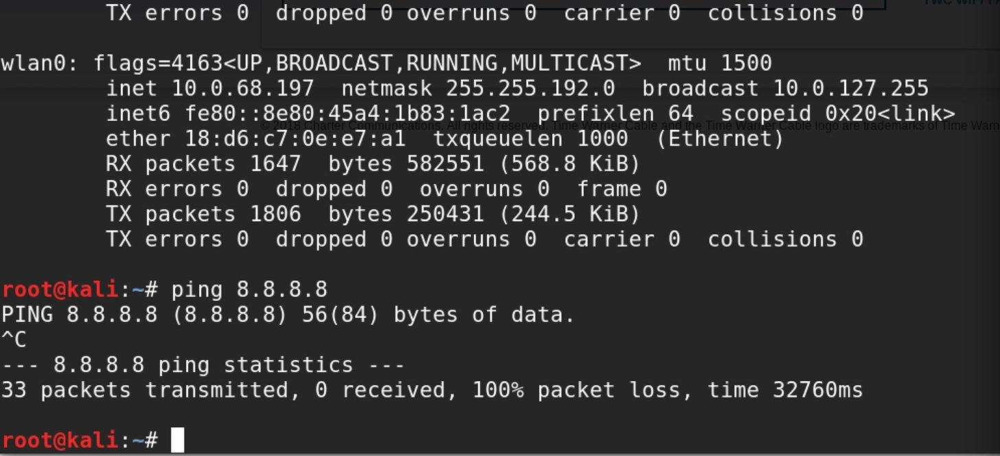
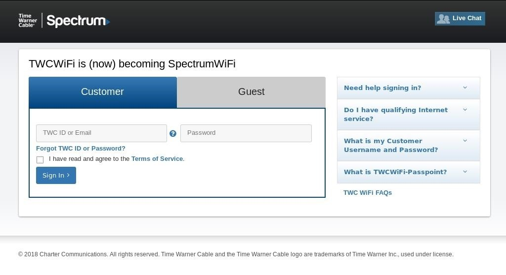
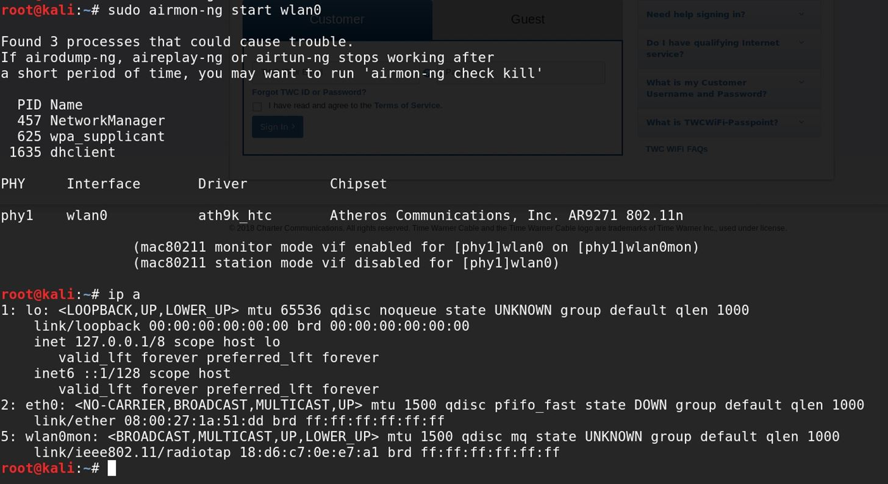
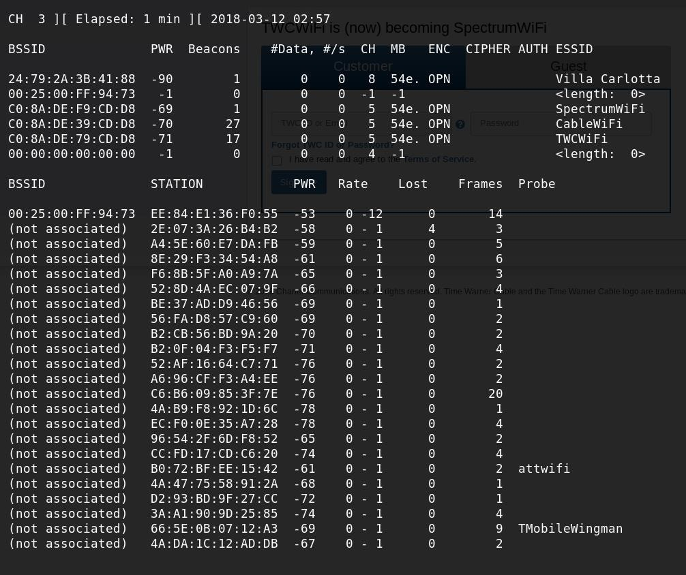
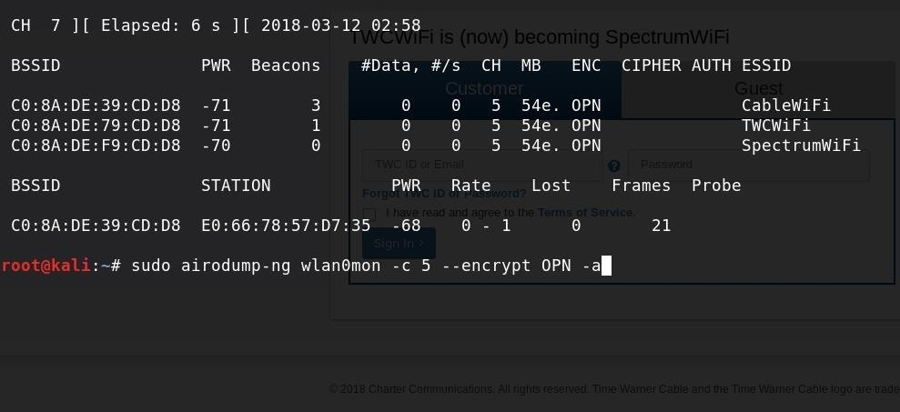
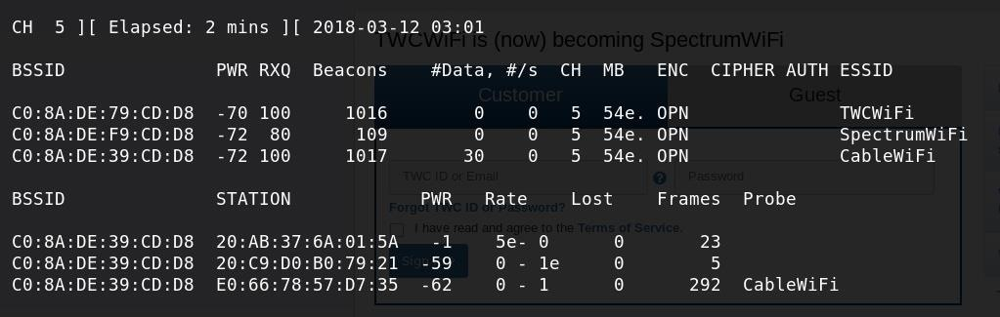
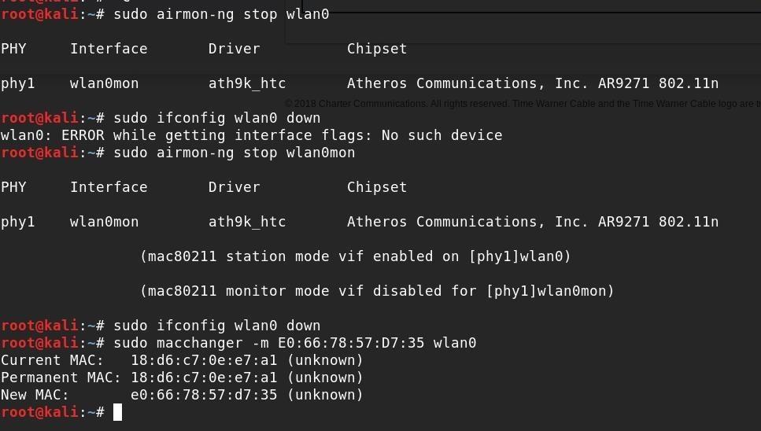
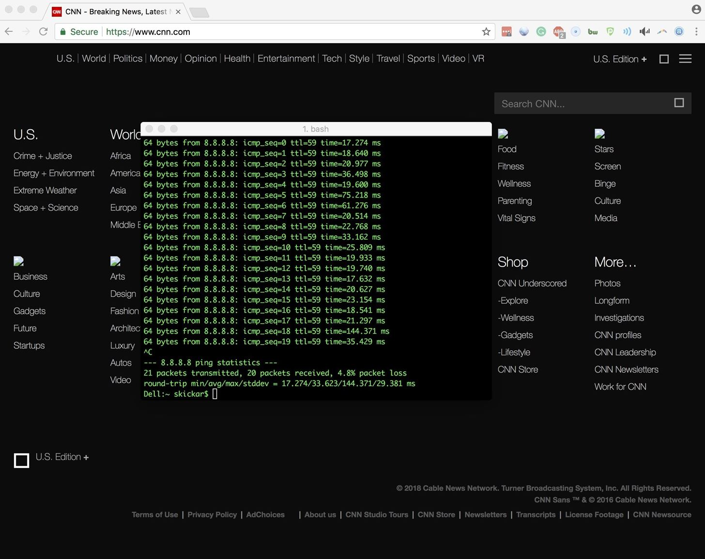

Данная статья написана в ознакомительных целях. Автор ни в коем случае не призывает читателей к нарушению законодательства РФ. Пожалуйста, не повторяйте действия, описанные в данной статье, предварительно не ознакомившись с главой 28 УК РФ. Все торговые марки и названия Wi-Fi сетей в данной статье являются выдуманными, а все совпадения — случайными.
После обнаружения и мониторинга ближайших точек доступа Wi-Fi сетей и устройств, подключенных к ним, хакеры могут использовать эту информацию, чтобы обойти некоторые виды средств безопасности, которые используются для точек доступа Wi-Fi в кафе, гостиницах и самолетах, находящихся в небе. Поменяв свой MAC-адрес на тот, который уже подключен к этой сети, хакер может обойти MAC-фильтр и свободно подключиться к сети.
Сети в общественных местах, на которых не установлен пароль — обычное явление. Это позволяет кому угодно подключиться к сети, не вводя пароль. Скорее всего, вы с таким уже сталкивались где-нибудь в Starbucks, гостиничных номерах или в авиарейсах, предоставляющих Wi-Fi на время полета. У всех этих сетей есть портал для входа в систему или страницу для платежей, на которые пользователи перенаправляются до того, как они смогут напрямую подключиться к Интернету.
Как MAC-адреса играют ключевую роль в соединении
Чтобы подключиться к одной из публичных точек доступа или к любому маршрутизатору, устройству необходим MAC-адрес. При попытке подключения он назначает устройству IP-адрес, тем самым гарантируя, что любые запросы, которые устройство посылает для загрузки контента из Интернета, вернутся обратно на правильный IP- (и MAC-) адрес. Маршрутизаторы могут разрешать или запрещать устройствам доступ к Интернету только на основе его MAC-адреса.
Публичные беспроводные сети управляют своей безопасностью на основе секретных «белых списков» MAC-адресов, принадлежащих устройствам, которые уже прошли процесс аутентификации. Эти устройства либо уже приняли условия обслуживания и заплатили, либо иным образом прошли этот процесс, который нужен для того, чтобы их зарегистрировать с помощью специального сетевого MAC-фильтра. У таких устройств есть свободный доступ к Интернету, без необходимости в течение определенного времени проходить еще раз через портал аутентификации.
В настоящее время у Wi-Fi точек доступа есть не так много способов, кроме MAC-адресов, с помощью которых можно было бы различать беспроводные устройства, пытающиеся подключиться к сети. К счастью для хакеров, сейчас все еще легко изменить или подменить MAC-адрес Wi-Fi-устройства. MAC-адрес должен быть уникальным адресом, установленным производителем оборудования для идентификации этого оборудования в сети или среди других устройств. Но предполагать, что MAC-адреса всегда настоящие — это не очень хорошая идея.
Как использовать такую дыру в безопасности
Просто сканируя ближайшую территорию с помощью таких инструментов, как Kismet или Airodump-ng, хакер может с легкостью видеть каждую открытую Wi-Fi сеть, а также всех подключенных к ней клиентов. Это ясно раскрывает MAC-адрес любого устройства, обменивающегося данными с сетью, что свидетельствует о том, что такое устройство уже прошло аутентификацию.
Затем происходит спуфинг (подмена) MAC-адреса. Простой инструмент командной строки, такой как GNU MAC Changer, может поменять MAC-адрес хакера на тот адрес, который уже был подключен. Это позволяет подключаться к сети, маскируясь под устройство, прошедшее аутентификацию, и получать тот же уровень доступа.
После успешной подмены MAC-адреса хакер может получить доступ к сети без аутентификации или даже без оплаты стоимости подключения. Еще вариант — добавление небольшого наблюдательного устройства или камеры в публичную Wi-Fi сеть. Такие устройства не могут сами по себе проходить аутентификацию через портал тем же способом, каким некоторые открытые сети требуют подключаться.
Стоит отметить, что большинство этих типов сетей запрещают устройствам напрямую общаться друг с другом, ограничивая каждое устройство своей собственной подсетью. Поэтому не думайте, что вы сможете добавить в нее Raspberry Pi и SSH прямо из точки доступа в кафе. Несмотря на это ограничение, способность получать бесплатный неограниченный доступ к информации является критически важным навыком для хакера, и использование этого фокуса обеспечит вам подключение к данным прямо посреди города без необходимости в навороченной инфраструктуре.
Это относительно простые действия, но вам понадобятся некоторые технические средства, чтобы провернуть это. Во-первых, нужно изменять ваш MAC-адрес, что можно сделать с помощью программы GNU MAC Changer, как мы уже обсуждали. Сделать это довольно легко практически для любой системы, особенно для Linux и macOS.
Затем вы должны быть в состоянии находить и прослушивать ближайшие беспроводные сети. Для сканирования большой области можно использовать Kismet, который запускается на Linux или macOS, но другие специализированные инструменты, вроде Airodump-ng, точно так же позволяют настраивать таргетинг. И то и другое будет работать.
В большинстве случаев вам понадобится беспроводной сетевой адаптер, который можно включать в режим мониторинга или в «неразборчивый» режим. Хотя Kismet может включать этот режим на беспроводных картах на macOS, мы рекомендуем использовать любой совместимый с Kali сетевой адаптер, например, PAU05 за 16 долларов, для того, чтобы иметь возможность запускать все имеющиеся в вашем распоряжении средства мониторинга беспроводных сетей.
Шаг 1. Установка необходимых инструментов
Как всегда, убедитесь, что ваша система Kali обновлена, запустите в терминале команду apt-get update. Затем проверьте, есть ли у вас правильные инструменты, выполнив в терминале apt-get install macchanger aircrack-ng. Это обеспечит обновление версий обеих программ и при необходимости она установит последнюю версию программы.
В пакет Aircrack-ng входит Airodump-ng — это наш разведывательный инструмент для этой тактики. Мы также можем использовать Kismet, но с помощью простых фильтров Airodump-ng выполнять эти задачи проще. Если вы предпочитаете использовать Kismet, то вы можете посмотреть нашу статью о беспроводном наблюдении с помощью Kismet.
Шаг 2. Проверка безопасности открытой сети
Прежде чем двинуться дальше, подключитесь к открытой сети, чтобы проверить, есть ли какая-нибудь защита, через которую нужно проходить.
В нашем примере мы изучаем открытую (не имеющую пароля) публичную Wi-Fi сеть, которая бесплатна для абонентов кабельного телевидения. При подключении нашему устройству назначается IP-адрес, при этом мы не можем получить доступ в Интернет. Мы проверили, сможет ли наш ping пройти через точку доступа в Интернет. Результат показан на скриншоте ниже.

Наши пакеты ни разу не прошли в Интернет, поэтому нам нужно открыть браузер, чтобы посмотреть, есть ли какой-нибудь портал для входа, на который нас перенаправляют для того, чтобы залогиниться и получить доступ в Интернет. Как это типично для таких сетей — любая попытка загрузить какую-нибудь веб-страницу перенаправляет нас на страницу портала, которая запрашивает каждый раз учетные данные для входа в систему.
Откройте Firefox, введите URL-адрес, а затем вас перенаправят на этот портал:

Шаг 3. Включение режима мониторинга
Теперь, когда вы убедились, что у сети есть портал для входа, который, скорее всего, использует MAC-адрес, пришло время найти кого-то, кто уже присоединился к сети. Для начала приведите ваши инструменты в порядок. Подключите адаптер беспроводной сети и используйте команду ifconfig для того, чтобы увидеть имя, которое ваш компьютер ему назначил. Это должно быть что-то вроде wlan0 или wlan1.
Как только вы получите название вашего интерфейса, нужно переключить карту в режим мониторинга для исследования ближайшей территории. Для этого введите в терминале следующее:
sudo airmon-ng start CardName
ip a
Эта команда должна переключить вашу карту в режим мониторинга, а затем отобразить список подключенных сетевых устройств. Если ваша карта переключилась в режим мониторинга, то ее имя должно было измениться — в конце названия интерфейса должно появиться окончание «mon». Таким образом, если вы работаете с картой wlan0, то она должна измениться на wlan0mon.

Скопируйте имя карты, которая была переключена в режим мониторинга, так как вам это понадобится для следующей команды.
Шаг 4. Сканирование и фильтрация типов шифрования
Чтобы отсканировать всю область в поисках открытых сетей, нужно воспользоваться Airodump-ng с одним аргументом. В окне терминала введите следующую команду, заменив «wlan0mon» на имя вашей беспроводной карты.
sudo airodump-ng wlan0mon --encrypt OPN
Параметр —encrypt OPN позволяет нам указать, что мы хотим видеть только близлежащие открытые сети. Мы должны увидеть список всех открытых сетей в диапазоне по всем каналам.

Этот список может быть большим. Чтобы им можно было нормально пользоваться, его нужно отфильтровать. Пусть эта команда поработает некоторое время и найдет несколько ключевых вещей: передачу данных и клиентов. По умолчанию ваша карта будет сканировать все каналы, так что она будет выводить довольно много данных. Вы можете увидеть клиентские устройства (ноутбуки, сотовые телефоны и другие Wi-Fi устройства), перечисленные в таблице внизу.
При этом он начнет показывать вам передаются ли данные в сети или передаются только сигналы «маяков». Маяки — это автоматизированные пакеты, которые отправляются много раз в секунду для того, чтобы сообщать соседним устройствам, что они доступны для подключения, и они не представляют собой ничего интересного. Однако данные означают, что в сети кто-то есть. Если перескакивать с канала на канал, то иногда это бывает трудно заметить. Нажмите Ctrl + C, чтобы остановить сканирование.
Шаг 5. Нацельтесь на определенный канал и клиента
Чтобы держать карту на одном канале, выберите канал с наиболее открытыми сетями. Большинство из тех, которые мы видели в нашем примере, находятся на канале 5. Поэтому чтобы оставаться на 5 канале мы можем добавить -c 5 в эту команду. Это, однако, покажет много неассоциированных устройств, таких как ноутбуки или смартфоны, которые еще не подключены к Wi-Fi сети.
Поскольку вы ищете подключенные устройства, которые уже прошли через фильтр MAC-адресов, то вам нужно добавить еще один аргумент для отображения только ассоциированных (подключенных) устройств. На скриншоте ниже вы можете увидеть результат повторного запуска предыдущей команды с флагом -c 5, что показывает только сети на канале 5.

Чтобы создать фильтр для поиска подключенного пользователя, добавьте флаг -c 5, чтобы указать на канал 5, и флаг -a для игнорирования любых клиентов, которые в настоящее время не подключены. Убедившись, что вы изменили номер канала на тот, который вам нужен, запустите в окне терминала следующее:
sudo airodump-ng wlan0mon -c 5 --encrypt OPN -a
Остановитесь на одном канале и сосредоточьтесь только на ассоциированных клиентах. На скриншоте ниже видно, что мы обнаружили использование данных в последней из трех найденной открытой сети на выбранном канале. На выводе в нижней половине экрана отображаются подключенные клиенты, и очевидно, что в этой сети есть три подключенных клиента. Это те данные, которые нам необходимы для входа в сеть.

Чтобы убедиться, что эти клиенты подключены к «CableWiFi», вы можете посмотреть «разведывательный» фрейм с клиентского устройства, ищущего сеть «CableWiFi». Это означает, что он был подключен к сети раньше и теперь ищет ее для повторного соединения. Вы также можете увидеть, что подключенный «BSSID» этих клиентов соответствует BSSID сети «CableWiFi», то есть три указанных MAC-адреса связаны с целевой сетью.
Поскольку один клиент (последний в нашем случае) имеет значительно больше фреймов, отправленных по сети, чем другие, мы можем предположить, что последний клиент использует большинство из передаваемых по сети данных и поэтому представляет собой наилучшего кандидата, которым можно притвориться.
Обратите внимание на выбранный MAC-адрес, так как он является вашим ключом к сети.
Шаг 6. Переключитесь в режим станции
Теперь вы можете вывести карту из режима мониторинга и переключить ее обратно в режим станции. Для этого введите sudo airmon-ng stop wlan0mon, заменив имя интерфейса именем вашей карты. Это должно изменить имя карты и удалить «mon» в конце ее названия. Запустите ip a еще раз, чтобы подтвердить новое имя карты.
Как только вы перейдете в режим станции, чтобы изменить MAC-адрес, вам нужно будет выключить карту. Вы можете сделать это, набрав sudo ifconfig wlan0 down. Опять же, не забудьте заменить wlan0 на имя вашей беспроводной карты.
Шаг 7. Замаскируйтесь под подключенного клиента
Как только ваша карта будет выключена, вы можете использовать MAC Changer для изменения вашего MAC-адреса. Это делается путем ввода в терминал следующей команды:
sudo macchanger -m TheNewMACaddress TheNameOfTheInterface

После того, как это изменение будет выполнено, включите карту, набрав следующую команду, а затем попробуйте повторно подключиться к целевой сети:
sudo ifconfig wlan0 up
С помощью клонированного MAC-адреса вы можете подключиться к сети, к которой было подключено ваше целевое устройство. Сразу же вы должны увидеть отличие от той ситуации, когда вы пытались подключиться с вашим настоящим MAC-адресом — внезапно ваши пинги начнут проходить, и вы сможете заходить на веб-сайты без перенаправления обратно на портал для прохождения аутентификации!

Важно отметить, что другое устройство в сети может внезапно столкнуться с трудностями подключения к этой сети из-за коллизии IP-адресов. Это вызвано тем, что два устройства с одинаковым MAC-адресом находятся в одной сети и им назначается один IP-адрес. Из-за этого вы должны быть осторожны в использовании этого метода, поскольку это может свидетельствовать о несанкционированном доступе к сети и вызовет последующий отказ в обслуживании пользователя, чей MAC-адрес вы одолжили.
Другие варианты использования для спуфинга MAC-адресов
Процесс добавления в сеть IoT-устройства или любого другого устройства, не имеющего возможности пройти через аутентифицирующий портал, очень прост. Вместо того, чтобы подменять адрес существующего устройства, вы можете просто подменить ваш MAC-адрес на адрес устройства, которое вы хотите добавить в сеть. После того, как вы перешли через портал и ваш MAC-адрес был добавлен в белый список, то вы можете вернуться к вашему старому MAC-адресу и подключить IoT-устройство без каких-либо проблем.
Поскольку вы вручную добавили MAC-адрес в MAC-фильтр открытой сети, то он должен иметь возможность напрямую подключаться к Интернету без каких-либо проблем. Имейте в виду, что большинство открытых сетей ограничивают пользователей своей собственной подсетью, поэтому не думайте, что сможете использовать SSH для подключения к вашему устройству через локальную сеть. Когда вы перезагрузитесь, ваш MAC-адрес вернется к оригинальному значению. Вы можете изменить его обратно через MAC Changer или перезагрузившись, когда закончите спуфинг вашего адреса.
Поскольку MAC-адреса можно легко подменить, то их обычно не рекомендуется использовать в тех ситуациях и для такой работы, которая требует реальной безопасности. И хотя фильтрация MAC-адресов может помешать начинающему взломщику подключиться к устройству, но любой, у кого есть базовые знания о беспроводной разведке, легко обойдет такое ограничение сети.
Безопаснее требовать пароль для подключения и ограничивать пользователя своей собственной подсетью, в отличие от создания открытой сети с помощью аутентифицирующего портала, использующего фильтрацию MAC-адресов.
Надеемся, вам понравилась эта статья по обходу безопасности на основе подмены MAC-адресов в открытых сетях. Если у вас есть какие-либо вопросы о том, как работает спуфинг MAC-адресов, не стесняйтесь, оставляйте комментарии и следите за нашими обновлениями.
Отказ от ответственности: Эта статья написана только для образовательных целей. Автор или издатель не публиковали эту статью для вредоносных целей. Если читатели хотели бы воспользоваться информацией для личной выгоды, то автор и издатель не несут ответственность за любой причиненный вред или ущерб.